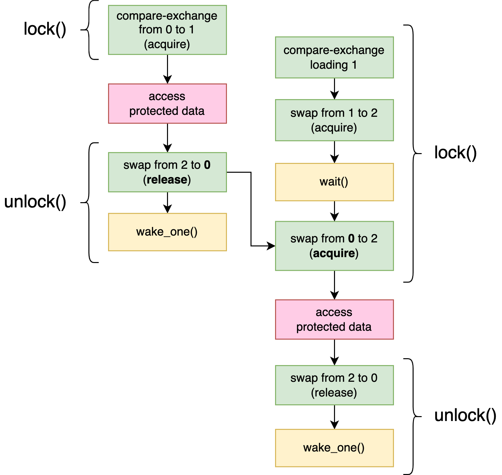
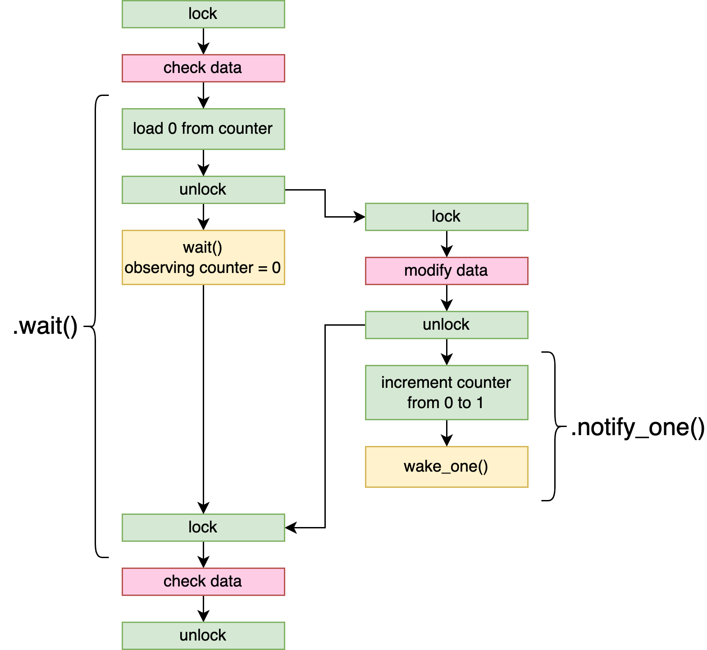

In "Futex" in Chapter 8, we discussed a very minimal example that shows how these functions are used in practice. If you’ve forgotten, make sure you check out that example before continuing.
Building Our Own Locks
Building Our Own Locks
In this chapter, we’ll build our own mutex, condition variable, and reader-writer lock. For each of them, we’ll start with a very basic version, and then extend it to make it more efficient.
Since we’re not going to use the lock types from the standard library (which would be cheating), we’re going to have to use the tools from Chapter 8 to be able to make threads wait without busy-looping. However, as we saw in that chapter, the available tools the operating system provides vary a lot per platform, making it hard to build something that works cross-platform.
Fortunately, most modern operating systems support futex-like functionality, or at least the wake and wait operations. As we saw in Chapter 8, Linux has supported them since 2003 with the futex syscall, Windows since 2012 with the WaitOnAddress family of functions, FreeBSD since 2016 as part of the _umtx_op syscall, and so on.
The most notable exception is macOS. While its kernel does support these operations, they are not exposed through any stable, publicly usable C function that we can use. However, macOS does ship with a recent version of libc++, an implementation of the C++ standard library. This library includes support for C++20, which is the version of C++ that comes with built-in support for very basic atomic wait and wake operations (like std::atomic<T>::wait()). While it’s somewhat tricky to make use of that from Rust for a variety of reasons, it is certainly possible, giving us access to basic futex-like wait and wake functionality on macOS as well.
We’ll not dive into the dirty details, but instead make use of the atomic-wait crate from crates.io to provide us with the building blocks for our locking primitives. This crate provides just three functions: wait(), wake_one(), and wake_all(). It implements these for all the major platforms, using the various platform-specific implementations we’ve discussed above. This means we no longer have to think about any platform-specific details, as long as we stick to these three functions.
These functions behave like the identically named ones we implemented in "Futex" in Chapter 8 for Linux, but let’s quickly recall how they work:
wait(&AtomicU32, u32)
This function is used to wait until the atomic variable no longer contains the given value. It blocks if the value stored in the atomic variable is equal to the given value. When another thread modifies the value of the atomic variable, that thread needs to call one of the wake functions below, on the same atomic variable, to wake up the waiting thread from its sleep.
This function might return spuriously, without a corresponding wake operation. So make sure to check the value of the atomic variable after it returns, and repeat the wait() call if necessary.
wake_one(&AtomicU32)
This wakes up a single thread that’s currently blocked on wait() on the same atomic variable. Use this right after modifying the atomic variable, to inform one waiting thread of the change.
wake_all(&AtomicU32)
This wakes up all threads that are currently blocked on wait() on the same atomic variable. Use this right after modifying the atomic variable, to inform the waiting threads of the change.
Only 32-bit atomics are supported, because that’s the only size that’s supported on all major platforms.
Note
To use the atomic-wait crate, add atomic-wait = "1" to the [dependencies] section in your Cargo.toml; or run cargo add atomic-wait@1, which will do that for you. The three functions are defined in the root of the crate and can be imported with use atomic_wait::{wait, wake_one, wake_all};.
Note
There might be later versions of this crate available by the time you’re reading this, but only major version 1 is made for this chapter. Later versions might not have a compatible interface.
Now that we have our basic building blocks ready, let’s get started.
Mutex
We’ll take our SpinLock<T> type from Chapter 4 as our reference while building our Mutex<T>. The parts not involved in blocking, such as the design of the guard type, will remain unchanged.
Let’s start with the type definition. We’ll have to make one change compared to the spin lock: instead of an AtomicBool set to false or true, we’ll use an AtomicU32 set to zero or one, so we can use it with the atomic wait and wake functions.
pub struct Mutex<T> {
/// 0: unlocked
/// 1: locked
state: AtomicU32,
value: UnsafeCell<T>,
}Just like for the spin lock, we need to promise that a Mutex<T> can be shared between threads, even though it contains a scary UnsafeCell:
unsafe impl<T> Sync for Mutex<T> where T: Send {}We’ll also add a MutexGuard type that implements the Deref traits to provide a fully safe locking interface, like we did in "A Safe Interface Using a Lock Guard" in Chapter 4:
pub struct MutexGuard<'a, T> {
mutex: &'a Mutex<T>,
}
unsafe impl<T> Send for MutexGuard<'_, T> where T: Send {}
unsafe impl<T> Sync for MutexGuard<'_, T> where T: Sync {}
impl<T> Deref for MutexGuard<'_, T> {
type Target = T;
fn deref(&self) -> &T {
unsafe { &*self.mutex.value.get() }
}
}
impl<T> DerefMut for MutexGuard<'_, T> {
fn deref_mut(&mut self) -> &mut T {
unsafe { &mut *self.mutex.value.get() }
}
}
Note
For the design and operation of a lock guard type, see "A Safe Interface Using a Lock Guard" in Chapter 4.
Let’s also get the Mutex::new function out of the way before we move on to the interesting part.
impl<T> Mutex<T> {
pub const fn new(value: T) -> Self {
Self {
state: AtomicU32::new(0), // unlocked state
value: UnsafeCell::new(value),
}
}
…
}Now that we have all that out of the way, there are two remaining pieces left: locking (Mutex::lock()) and unlocking (Drop for MutexGuard<T>).
The lock function we implemented for our spin lock uses an atomic swap operation to attempt to obtain the lock, returning if it successfully changed the state from "unlocked" to "locked." If unsuccessful, it immediately tries again.
To lock our mutex we’ll do almost the same, except we use wait() to wait before trying again:
pub fn lock(&self) -> MutexGuard<T> {
// Set the state to 1: locked.
while self.state.swap(1, Acquire) == 1 {
// If it was already locked..
// .. wait, unless the state is no longer 1.
wait(&self.state, 1);
}
MutexGuard { mutex: self }
}
Note
For the memory ordering, the same reasoning applies as with our spin lock. Refer back to Chapter 4 for the details.
Note how the wait() function will only block if the state is still set to 1 (locked) at the time we call it, such that we don’t have to worry about the possibility of missing a wake-up call between the swap and the wait calls.
The Drop implementation of the guard type is responsible for unlocking the mutex. Unlocking our spin lock was easy: just set the state back to false (unlocked). For our mutex, however, that won’t suffice. If there’s a thread waiting to lock the mutex, it won’t know that the mutex has been unlocked unless we notify it using a wake operation. If we don’t wake it up, it will most likely stay asleep forever. (Maybe it is lucky and is spuriously woken up at the right time, but let’s not count on that.)
So, we’ll not only set the state back to 0 (unlocked), but also call wake_one() right afterwards:
impl<T> Drop for MutexGuard<'_, T> {
fn drop(&mut self) {
// Set the state back to 0: unlocked.
self.mutex.state.store(0, Release);
// Wake up one of the waiting threads, if any.
wake_one(&self.mutex.state);
}
}Waking one thread is enough, because even if there are multiple threads waiting, only one of them will be able to claim the lock. The next thread to lock it will wake up another thread when it’s done with the lock, and so on. Waking up more than one thread at once will just set those threads up for disappointment, wasting valuable processor time when all but one of them realize their chance at locking has been snatched away by another lucky thread, before they go back to sleep again.
Note that there is no guarantee that the one thread that we wake up will be able to grab the lock. Another thread might still grab the lock right before it gets the chance.
An important observation to make here is how this mutex implementation would still be technically correct (that is, memory safe) without the wait and wake functions. Because the wait() operation can spuriously wake up, we can’t make any assumptions about when it returns. We still have to manage the state of our locking primitives ourselves. If we were to remove the wait and wake function calls, our mutex would be basically identical to our spin lock.
In general, the atomic wait and wake functions never play a factor in correctness, from a memory safety perspective. They are only a (very serious) optimization to avoid busy-looping. This doesn’t mean that an unusably inefficient lock would be considered "correct" by any practical standards, but this insight can be helpful when trying to reason about unsafe Rust code.
Lock API
If you’re planning to take on implementing Rust locks as a new hobby, you might quickly get bored with the boilerplate code involved in providing a safe interface. That is, the UnsafeCell, the Sync implementation, the guard type, the Deref implementations, and so on.
The lock_api crate on crates.io can be used to automatically take care of all these things. You’ll only have to make a type that represents the lock state, and provide (unsafe) lock and unlock functions through the (unsafe) lock_api::RawMutex trait. In return, the lock_api::Mutex type will provide you with a fully safe and ergonomic mutex type, including a mutex guard, based on your lock implementation.
Avoiding Syscalls
By far the slowest part of our mutex are the wait and wake, since those (can) result in a syscall, a call into the operating system’s kernel. Talking with the kernel like that is quite an involved process that tends to be quite slow, especially compared to atomic operations. So, for a performant mutex implementation, we should try to avoid wait and wake calls as much as possible.
Luckily, we’re already halfway there. Because the while loop in our locking function checks the state before the wait() call, the wait operation is skipped entirely in the situation where we don’t need to wait, when the mutex wasn’t locked. We do, however, unconditionally call the wake_one() function when unlocking.
We can skip the wake_one() if we know there are no other threads waiting. To know whether there are waiting threads, we need to keep track of this information ourselves.
We can do this by splitting the "locked" state into two separate states: "locked without waiters" and "locked with waiter(s)." We’ll use the values 1 and 2 for that, and update our documentation comment of the state field in the struct definition:
pub struct Mutex<T> {
/// 0: unlocked
/// 1: locked, no other threads waiting
/// 2: locked, other threads waiting
state: AtomicU32,
value: UnsafeCell<T>,
}Now, for an unlocked mutex, our lock function still needs to set the state to 1 to lock it. However, if it was already locked, our lock function now needs to set the state to 2 before going to sleep, so that the unlock function can tell there’s a waiting thread.
To do this, we’ll first use a compare-and-exchange function to attempt to change the state from 0 to 1. If that succeeds, we’ve locked the mutex, and we know there are no other waiters, since the mutex wasn’t locked before. If it fails, that must be because the mutex is currently locked (in state 1 or 2). In that case, we’ll use an atomic swap operation to set it to 2. If that swap operation returns an old value of 1 or 2, that means the mutex was indeed still locked, and only then do we use wait() to block until it changes. If the swap operation returns 0, that means we’ve successfully locked the mutex by changing its state from 0 to 2.
pub fn lock(&self) -> MutexGuard<T> {
if self.state.compare_exchange(0, 1, Acquire, Relaxed).is_err() {
while self.state.swap(2, Acquire) != 0 {
wait(&self.state, 2);
}
}
MutexGuard { mutex: self }
}Now, our unlock function can make use of the new information by skipping the wake_one() call when it’s unnecessary. Instead of just storing a 0 to unlock the mutex, we’ll now use a swap operation so we can check its previous value. Only if that value was 2, will we continue to wake up a thread:
impl<T> Drop for MutexGuard<'_, T> {
fn drop(&mut self) {
if self.mutex.state.swap(0, Release) == 2 {
wake_one(&self.mutex.state);
}
}
}Note that after setting the state back to zero, it no longer indicates whether there are any waiting threads. The thread that’s woken up is responsible for setting the state back to 2, to make sure any other waiting threads are not forgotten. This is why the compare-and-exchange operation is not part of the while loop in our lock function.
This does mean that for every time a thread had to wait() while locking, it will also call wake_one() when unlocking, even when that’s not necessary. However, what’s most important is that in the uncontended case, the ideal situation where threads are not attempting to acquire the lock simultaneously, both the wait() and wake_one() calls are entirely avoided.
Figure 9-1 visualizes the operations and happens-before relationships in a situation where two threads concurrently attempt to lock our Mutex. The first thread locks the mutex by changing the state from 0 to 1. At that point, the second thread will not be able to acquire the lock and therefore goes to sleep after changing the state from 1 to 2. When the first thread unlocks the Mutex, it swaps the state back to 0. Because it was 2, indicating a waiting thread, it calls wake_one() to wake up the second thread. Note how we do not depend on any happens-before relationship between the wake and wait operations. While it’s likely that the wake operation is the one responsible for waking up the waiting thread, the happens-before relationship is established through the acquire swap operation observing the value stored by the release swap operation.

Optimizing Further
At this point, it might seem like there’s not much else we could optimize further. In the uncontended case, we perform zero syscalls, and all that’s left are just two very simple atomic operations.
The only way to avoid the wait and wake operations is to go back to our spin lock implementation. While spinning is usually very inefficient, it at least does avoid the potential overhead of a syscall. The only situation where spinning can be more efficient is when waiting for only a very short time.
For locking a mutex, that happens only in situations where the thread that currently holds the lock is running in parallel on a different processor core and will keep the lock only very briefly. This is, however, a very common case.
We can try to combine the best of both approaches by spinning for a very short amount of time before resorting to calling wait(). That way, if the lock is released very quickly, we don’t need to call wait() at all, but we still avoid consuming an unreasonable amount of processor time that other threads could make better use of.
Implementing this only requires changes to our lock function.
To keep things as performant as possible in the uncontended case, we’ll keep the original compare-and-exchange operation at the start of the lock function. We’ll leave spinning waiting to a separate function.
impl<T> Mutex<T> {
…
pub fn lock(&self) -> MutexGuard<T> {
if self.state.compare_exchange(0, 1, Acquire, Relaxed).is_err() {
// The lock was already locked. :(
lock_contended(&self.state);
}
MutexGuard { mutex: self }
}
}
fn lock_contended(state: &AtomicU32) {
…
}In lock_contended, we could simply repeat the same compare-and-exchange operation a few hundred times before continuing to the wait loop. However, a compare-and-exchange operation generally attempts to get exclusive access to the relevant cache line (see "The MESI protocol" in Chapter 7), which can be more expensive than a simple load operation when executed repeatedly.
With that in mind, we come to the following lock_contended implementation:
fn lock_contended(state: &AtomicU32) {
let mut spin_count = 0;
while state.load(Relaxed) == 1 && spin_count < 100 {
spin_count += 1;
std::hint::spin_loop();
}
if state.compare_exchange(0, 1, Acquire, Relaxed).is_ok() {
return;
}
while state.swap(2, Acquire) != 0 {
wait(state, 2);
}
}First, we spin up to 100 times, making use of a spin loop hint like we did in Chapter 4. We only spin as long as the mutex is locked and has no waiters. If another thread is already waiting, it means it gave up spinning because it took too long, which can be an indication that spinning will likely not be very useful for this thread either.
Note
The spin duration of a hundred cycles is chosen mostly arbitrarily. The time an iteration takes and the duration of a syscall (which we’re trying to avoid) depend heavily on the platform. Extensive benchmarking can help with choosing the right number, but unfortunately there’s not a single correct answer.
The Linux implementation of std::sync::Mutex in the Rust standard library, at least the one in Rust 1.66.0, uses a spin count of 100.
After the lock state has changed, we try once more to lock it by setting it to 1, before we give up and start waiting. As we discussed before, after we call wait() we can no longer lock the mutex by setting its state to 1, since that might result in other waiters being forgotten.
Cold and Inline Attributes
You could add the #[cold] attribute to the lock_contended function definition to help the compiler understand that this function is not called in the common (uncontended) case, which can help with optimizations for the lock method.
Additionally, you could add the #[inline] attribute to the Mutex and MutexGuard methods to inform the compiler that it might be a good idea to inline them: to put the resulting instructions directly at the place where the method is called. Whether that increases performance is hard to say in general, but for very small functions like these, it usually does.
Benchmarking
Testing the performance of a mutex implementation is hard. It’s easy to write a benchmark test and get some numbers, but it’s very hard to get any meaningful numbers.
Optimizing a mutex implementation to perform very well in a specific benchmark test is relatively easy, but not very useful. After all, the point is to make something that performs well in real-world programs, not just in test programs.
We’ll attempt to write two simple benchmark tests showing that our optimizations at least had some positive effect on some use cases, but keep in mind that any conclusions won’t necessarily hold up in different scenarios.
For our first test, we’ll create a Mutex and lock and unlock it a few million times, all on the same thread, measuring the total time it takes. This is a test for the trivial uncontended scenario, where there are never any threads that need to be woken up. Hopefully, this will show us a significant difference between our 2-state and 3-state versions.
fn main() {
let m = Mutex::new(0);
std::hint::black_box(&m);
let start = Instant::now();
for _ in 0..5_000_000 {
*m.lock() += 1;
}
let duration = start.elapsed();
println!("locked {} times in {:?}", *m.lock(), duration);
}
Note
We use std::hint::black_box (like we did in "Impact on Performance" in Chapter 7) to force the compiler to assume there might be more code that accesses the mutex, preventing it from optimizing away the loop or locking operations.
Results will vary heavily depending on hardware and operating system. Trying this on one particular Linux computer with a recent AMD processor results in a total time of about 400 milliseconds for our unoptimized 2-state mutex, and about 40 milliseconds for our more optimized 3-state mutex. A factor ten improvement! On another Linux computer with an older Intel processor, the difference is even bigger: about 1800 milliseconds versus 60 milliseconds. This confirms that the addition of the third state can indeed be a very significant optimization.
Running this on a computer that runs macOS, however, produces completely different results: about 50 milliseconds for both versions, showing that it’s all highly platform-dependent.
As it turns out, the implementation of libc++'s std::atomic<T>::wake(), which we use on macOS, already performs its own bookkeeping, independent from the kernel, to avoid unnecessary syscalls. The same holds for WakeByAddressSingle() on Windows.
Avoiding a call to those functions can still result in slightly better performance, since their implementation is far from trivial, especially because they can’t store any information in the atomic variable itself. However, if we’d only be targeting only these operating systems, we should question whether adding a third state to our mutex was really worth the effort.
To see if our spinning optimization made any positive difference, we need a different benchmark test: one with lots of contention, with multiple threads repeatedly trying to lock an already locked mutex.
Let’s try a scenario where four threads all concurrently attempt to lock and unlock the mutex a few million times:
fn main() {
let m = Mutex::new(0);
std::hint::black_box(&m);
let start = Instant::now();
thread::scope(|s| {
for _ in 0..4 {
s.spawn(|| {
for _ in 0..5_000_000 {
*m.lock() += 1;
}
});
}
});
let duration = start.elapsed();
println!("locked {} times in {:?}", *m.lock(), duration);
}Note that this is an extreme and unrealistic scenario. The mutex is only kept for an extremely short time (only to increment an integer), and the threads will immediately attempt to lock the mutex again after unlocking. A different scenario will most likely result in very different results.
Let’s run this benchmark on the same two Linux computers as before. On the one with the older Intel processor, this results in about 900 milliseconds for the version of our mutex that doesn’t spin, and about 750 milliseconds when using the spinning version. An improvement! On the computer with the newer AMD processor, however, we get opposite results: about 650 milliseconds without spinning and about 800 milliseconds with.
In conclusion, the answer as to whether spinning actually increases performance is, unfortunately, "it depends," even when looking at just one scenario.
Condition Variable
Let’s move on to something more fun: implementing a condition variable.
As we saw in "Condition Variables" in Chapter 1, a condition variable is used together with a mutex to wait until the mutex-protected data matches some condition. It has a wait method that unlocks a mutex, waits for a signal, and locks the same mutex again. Signals are sent by other threads, usually right after modifying the mutex-protected data, to either one waiting thread (often called "notify one" or "signal") or all waiting threads (often called "notify all" or "broadcast").
While a condition variable attempts to keep a waiting thread asleep until it is signalled, it is possible for a waiting thread to be woken up spuriously, without a corresponding signal. The condition variable’s wait operation will still relock the mutex before returning, though.
Notice how this interface is nearly identical to our futex-like wait(), wake_one(), and wake_all() functions. The main difference is the mechanism used to prevent lost signals. A condition variable will start "listening" to signals before unlocking the mutex to not miss any signals right after, while our futex-style wait() function relies on a check of the state of the atomic variable to make sure waiting is still a good idea.
This leads to the following minimal implementation idea for a condition variable: if we make sure that every notification changes an atomic variable (like a counter), then all our Condvar::wait() method needs to do is check the value of that variable before unlocking the mutex, and pass it to the futex-style wait() function after unlocking it. That way, it will not go to sleep if any notification signal arrived since unlocking the mutex.
Let’s try that out!
We start with a Condvar struct that just contains a single AtomicU32, which we initialize at zero:
pub struct Condvar {
counter: AtomicU32,
}
impl Condvar {
pub const fn new() -> Self {
Self { counter: AtomicU32::new(0) }
}
…
}The notify methods are simple. They just need to change the counter and use the corresponding wake operation to notify any waiting thread(s):
pub fn notify_one(&self) {
self.counter.fetch_add(1, Relaxed);
wake_one(&self.counter);
}
pub fn notify_all(&self) {
self.counter.fetch_add(1, Relaxed);
wake_all(&self.counter);
}(We’ll discuss the memory ordering in a moment.)
The wait method will take a MutexGuard, since that represents proof of a locked mutex. It will also return a MutexGuard, since it’ll make sure the mutex is locked again before returning.
As we sketched out above, the method will first check the current value of the counter before unlocking the mutex. After unlocking the mutex, it should only wait if the counter hasn’t changed, to make sure we didn’t miss any signals. Here’s what that looks like as code:
pub fn wait<'a, T>(&self, guard: MutexGuard<'a, T>) -> MutexGuard<'a, T> {
let counter_value = self.counter.load(Relaxed);
// Unlock the mutex by dropping the guard,
// but remember the mutex so we can lock it again later.
let mutex = guard.mutex;
drop(guard);
// Wait, but only if the counter hasn't changed since unlocking.
wait(&self.counter, counter_value);
mutex.lock()
}
Note
This makes use of the private mutex field of the MutexGuard. Privacy in Rust is based on modules, so if you’re defining this in a different module than the MutexGuard, you’ll need to mark the mutex field of the MutexGuard as, for example, pub(crate) to make it available to other modules in the crate.
Before we celebrate our success in finishing our condition variable, let’s think for a second about memory ordering.
While the mutex is locked, no other thread can change the mutex-protected data. Therefore, we don’t need to worry about notifications from before we unlock the mutex, since, as long as we hold the mutex locked, nothing can happen to the data that would make us change our mind about wanting to go to sleep and wait.
The only situation we’re interested in is when, after we release the mutex, another thread comes along and locks the mutex, changes the protected data, and signals us (hopefully after unlocking the mutex).
In this situation, there’s a happens-before relationship between unlocking the mutex in Condvar::wait() and locking the mutex in the notifying thread. This happens-before relationship is what guarantees that our relaxed load, which happens before unlocking, will observe the value before the notification’s relaxed increment operation, which happens after locking.
We don’t know whether the wait() operation will see the value before or after incrementing, since there’s nothing that guarantees any ordering at that point. However, that doesn’t matter, since wait() behaves atomically with respect to corresponding wake operations. Either it sees the new value, in which case it does not go to sleep at all, or it sees the old value, in which case it goes to sleep and will be woken up by the corresponding wake_one() or wake_all() call from the notification.
Figure 9-2 shows the operations and happens-before relationships for a situation in which one thread uses Condvar::wait() to wait for some mutex-protected data to change and gets woken up by a second thread that modifies the data and calls Condvar::notify_one(). Note how the first load operation is guaranteed to observe the value before it gets incremented, thanks to the unlock and lock operations.

We should also consider what happens if the counter overflows.
The actual value of the counter doesn’t matter as long as it is different after each notification. Unfortunately, after a bit more than four billion notifications, the counter will overflow and restart at zero, going back to values that have been used before. Technically, it is possible for our Condvar::wait() implementation to go to sleep when it shouldn’t: if it misses exactly 4,294,967,296 notifications (or any multiple of that), it will overflow the counter all the way around to the value it had before.
It’s entirely reasonable to consider the chance of that happening to be negligible. In contrast to what we did in our mutex locking method, we don’t recheck the state and repeat the wait() call after waking up here, so we only need to worry about an overflow round-trip happening in the moment between the relaxed load of the counter and the wait() call. If a thread can be interrupted for so long that it allows for (exactly) that many notifications to happen, something has probably already gone terribly wrong, and the program has already turned unresponsive. At that point, one might reasonably argue, a microscopic additional risk of a thread staying asleep no longer matters.
Note
On platforms that support futex-style waiting with a time limit, the risk of overflowing can be mitigated by using a timeout for the wait operation of a few seconds. Sending four billion notifications will take significantly longer, at which point the risk of a few additional seconds will have very little impact. This completely removes any risk of the program locking up due to a waiting thread wrongly staying asleep forever.
Let’s see if it works!
#[test]
fn test_condvar() {
let mutex = Mutex::new(0);
let condvar = Condvar::new();
let mut wakeups = 0;
thread::scope(|s| {
s.spawn(|| {
thread::sleep(Duration::from_secs(1));
*mutex.lock() = 123;
condvar.notify_one();
});
let mut m = mutex.lock();
while *m < 100 {
m = condvar.wait(m);
wakeups += 1;
}
assert_eq!(*m, 123);
});
// Check that the main thread actually did wait (not busy-loop),
// while still allowing for a few spurious wake ups.
assert!(wakeups < 10);
}We count the number of times the condition variable returns from its wait method, to make sure it actually goes to sleep. If that number would be very high, it would indicate that we are accidentally spin-looping instead. It’s important to test this, since a condition variable that never sleeps still results in "correct" behavior, but would effectively turn the waiting loop into a spin loop.
If we run this test, we see that it compiles and passes just fine, confirming that our condition variable did actually put the main thread to sleep. Of course, this doesn’t prove that its implementation is correct. A long stress test that involves many threads, ideally run on a computer with a weakly ordered processor architecture, can be used to gain more confidence if necessary.
Avoiding Syscalls
As we realized in "Mutex: Avoiding Syscalls", optimizing a locking primitive is mainly about avoiding unnecessary wait and wake operations.
In the case of our condition variable, there is not much use in trying to avoid the wait() call in our Condvar::wait() implementation. By the time a thread decides to wait on a condition variable, it has already checked that the thing it’s waiting for hasn’t happened yet, and it needs to go to sleep. If the wait wasn’t necessary, it wouldn’t have called Condvar::wait() at all.
We can, however, avoid the wake_one() and wake_all() calls if there are no waiting threads, similar to what we did for our Mutex.
A simple way to do this is to keep track of the number of waiting threads. Our wait method will need to increment it before waiting, and decrement it when it’s done. Then our notify methods can skip sending their signal if that number is zero.
So, we add a new field to our Condvar struct to track the number of active waiters:
pub struct Condvar {
counter: AtomicU32,
num_waiters: AtomicUsize, // New!
}
impl Condvar {
pub const fn new() -> Self {
Self {
counter: AtomicU32::new(0),
num_waiters: AtomicUsize::new(0), // New!
}
}
…
}By using an AtomicUsize for num_waiters, we don’t have to worry about it overflowing. A usize is big enough to count every byte in memory, so if we assume that every active thread takes up at least a single byte of memory, it’s definitely big enough to count any number of concurrently existing threads.
Next, we update our notification functions to not do anything if there are no waiters:
pub fn notify_one(&self) {
if self.num_waiters.load(Relaxed) > 0 { // New!
self.counter.fetch_add(1, Relaxed);
wake_one(&self.counter);
}
}
pub fn notify_all(&self) {
if self.num_waiters.load(Relaxed) > 0 { // New!
self.counter.fetch_add(1, Relaxed);
wake_all(&self.counter);
}
}(We’ll discuss the memory ordering in a moment.)
And finally, most importantly, we increment it at the start of our wait method and decrement as soon as it wakes up:
pub fn wait<'a, T>(&self, guard: MutexGuard<'a, T>) -> MutexGuard<'a, T> {
self.num_waiters.fetch_add(1, Relaxed); // New!
let counter_value = self.counter.load(Relaxed);
let mutex = guard.mutex;
drop(guard);
wait(&self.counter, counter_value);
self.num_waiters.fetch_sub(1, Relaxed); // New!
mutex.lock()
}We should again ask ourselves carefully if relaxed memory ordering is enough for all these atomic operations.
A new potential risk we’ve introduced is one of the notify methods observing a zero in num_waiters, skipping its wake operation, while there was actually a thread to wake up. This can happen when a notify method observes the value either before the increment operation or after the decrement operation.
Just as with the relaxed load from the counter, the fact that the waiter still holds the mutex locked while incrementing num_waiters makes sure that any load of num_waiters that happens after unlocking the mutex will not see a value from before it was incremented.
We also don’t need to worry about the notifying thread observing the decremented value "too soon," because once the decrementing operation is executed, perhaps after a spurious wake-up, the waiting thread no longer needs to be woken up anyway.
In other words, the happens-before relationship that the mutex establishes still provides all the guarantees we need.
Avoiding Spurious Wake-ups
Another way in which we could optimize our condition variable is by avoiding spuriously waking up. Every time a thread is woken up, it’ll try to lock the mutex, potentially competing with other threads, which can have a big impact on performance.
It’s quite uncommon for the underlying wait() operation to spuriously wake up, but our condition variable implementation easily allows for notify_one() to cause more than one thread to stop waiting. If a thread is in the process of going to sleep, has just loaded the counter value, but hasn’t gone to sleep yet, a call to notify_one() will prevent that thread from going to sleep due to the updated counter, but it’ll also cause a second thread to wake up because of the wake_one() operation that follows. Both of those threads will then compete to lock the mutex, wasting valuable processor time.
This might sound like a rarely occurring situation, but this can actually happen quite easily, due to how the mutex ends up synchronizing the threads. A thread that will call notify_one() on the condition variable will most likely lock and unlock the mutex right before, to change something about the data that the waiting thread is waiting for. This means that as soon as the Condvar::wait() method unlocks the mutex, that might immediately unblock a notifying thread that was waiting for the mutex. At that point the two threads are racing: the waiting thread to go to sleep, and the notifying thread to lock and unlock the mutex and notify the condition variable. If the notifying thread wins that race, the waiting thread will not go to sleep because of the incremented counter, but the notifying thread will still call wake_one(). This is exactly the problematic situation described above, where it might unnecessarily wake up an extra waiting thread.
A relatively straightforward solution would be to keep track of the number of threads that are allowed to wake up (that is, return from Condvar::wait()). The notify_one method would increase it by one, and the wait method would attempt to decrease it by one if it’s not zero. If the counter is at zero, it could go (back) to sleep, instead of attempting to relock the mutex and returning. (Notifying all threads could be done by adding another counter specifically for notify_all that is never decremented.)
This approach works, but comes with a new and more subtle issue: a notification might wake up a thread that hasn’t even called Condvar::wait() yet, including itself. A call to Condvar::notify_one() would increment the number of threads that should be woken up and use wake_one() to wake up one waiting thread. Then, if another (or even the same) thread calls Condvar::wait() afterwards, before the thread that was already waiting has a chance to wake up, the newly waiting thread could see that there’s one notification pending and claim it by decrementing the counter to zero, returning immediately. The first thread that was waiting would then go back to sleep, since another thread already took the notification.
Depending on the use case, this might be perfectly fine, or it might be a big problem, causing some threads to never make progress.
Note
GNU libc’s pthread_cond_t implementation used to suffer from this issue. After much discussion on whether or not this was allowed by the POSIX specification, the issue was eventually resolved with the release of GNU libc 2.25 in 2017, which included a completely new condition variable implementation.
In many situations where a condition variable is used, it’s perfectly fine for a waiter to snatch away an earlier notification. However, when implementing a condition variable for general use rather than a specific kind of use case, this behavior might be unacceptable.
Again, we must come to the conclusion that the answer to whether we should use an optimized approach is, unsurprisingly, "it depends."
Note
There are ways to avoid this problem while still avoiding spurious wake-ups, but those are significantly more complicated than other approaches.
The solution used by GNU libc’s new condition variable involves categorizing waiters into two groups, only allowing the first group to consume notifications and swapping the groups around when the first one has no waiters left.
A downside of this approach is not only the complexity of the algorithm, but also that it significantly increases the size of the condition variable type, since it now needs to keep track of much more information.
Thundering Herd Problem
Another performance problem that one might encounter when using a condition variable occurs when using notify_all() to wake up many threads waiting for the same thing.
The problem is that, after waking up, all those threads will immediately try to lock the same mutex. Most likely, only one thread will succeed, and all the others will have to go back to sleep. This resource-wasting problem of many threads all rushing to claim the same resource is referred to as the thundering herd problem.
It’s not unreasonable to argue that Condvar::notify_all() is fundamentally an anti-pattern not worth optimizing for. A condition variable’s purpose is to unlock a mutex and relock it when notified, so perhaps notifying more than one thread at once will never lead to anything good.
Even so, if we want to optimize for this situation, we can do so on operating systems that support a futex-like requeuing operation, like FUTEX_REQUEUE on Linux. (See "Futex Operations" in Chapter 8.)
Instead of waking up many threads of which all but one will immediately go back to sleep once they realize the lock has already been taken, we can requeue all but one thread such that their futex wait operations no longer wait for the condition variable’s counter, but start waiting for the mutex state instead.
Requeueing a waiting thread doesn’t wake it up. In fact, the thread won’t even know that it has been requeued. Unfortunately, this can lead to some very subtle pitfalls.
For example, remember how a three-state mutex always must be locked to the right state ("locked with waiters") after waking up, to make sure other waiters aren’t forgotten about? This means we should no longer use the regular mutex lock method in our Condvar::wait() implementation, which might set the mutex to the wrong state.
A requeuing condition variable implementation would need to store a pointer to the mutex used by the waiting threads. Otherwise, the notify methods wouldn’t know which atomic variable (the mutex state) to requeue the waiting threads to. This is why a condition variable generally does not allow two threads to wait for different mutexes. Even though many condition variable implementations do not make use of requeuing, it can be useful to keep open the possibility for a future version to do so.
Reader-Writer Lock
It’s time to implement a reader-writer lock!
Recall how, unlike a mutex, a reader-writer lock supports two types of locking: read-locking and write-locking, sometimes called shared locking and exclusive locking. Write-locking behaves identically to locking a mutex, only allowing one lock at a time, while read-locking allows for multiple readers to hold a lock at once. In other words, it closely matches how exclusive references (&mut T) and shared references (&T) work in Rust, allowing only one exclusive reference, or any number of shared references, to be active at the same time.
For our mutex, we needed to track only whether it was locked or not. For our reader-writer lock, however, we also need to know how many (reader) locks are currently held, to make sure write-locking only happens after all readers have released their locks.
Let’s start with a RwLock struct that uses a single AtomicU32 as its state. We’ll use it to represent the number of currently acquired read locks, such that a value of zero means it’s unlocked. To represent the write-locked state, let’s use a special value of u32::MAX.
pub struct RwLock<T> {
/// The number of readers, or u32::MAX if write-locked.
state: AtomicU32,
value: UnsafeCell<T>,
}For our Mutex<T>, we had to restrict its Sync implementation to types T that implement Send, to make sure it can’t be used to send, for example, an Rc to another thread. For our new RwLock<T>, we additionally need to require that T also implements Sync, because multiple readers will be able to access the data at once:
unsafe impl<T> Sync for RwLock<T> where T: Send + Sync {}Because our RwLock can be locked in two different ways, we’ll have two separate lock functions, each with its own type of guard:
impl<T> RwLock<T> {
pub const fn new(value: T) -> Self {
Self {
state: AtomicU32::new(0), // Unlocked.
value: UnsafeCell::new(value),
}
}
pub fn read(&self) -> ReadGuard<T> {
…
}
pub fn write(&self) -> WriteGuard<T> {
…
}
}
pub struct ReadGuard<'a, T> {
rwlock: &'a RwLock<T>,
}
pub struct WriteGuard<'a, T> {
rwlock: &'a RwLock<T>,
}The write guard should behave like an exclusive reference (&mut T), which we do by implementing both Deref and DerefMut for it:
impl<T> Deref for WriteGuard<'_, T> {
type Target = T;
fn deref(&self) -> &T {
unsafe { &*self.rwlock.value.get() }
}
}
impl<T> DerefMut for WriteGuard<'_, T> {
fn deref_mut(&mut self) -> &mut T {
unsafe { &mut *self.rwlock.value.get() }
}
}However, the read guard should only implement Deref, not DerefMut, because it doesn’t have exclusive access to the data, making it behave like a shared reference (&T):
impl<T> Deref for ReadGuard<'_, T> {
type Target = T;
fn deref(&self) -> &T {
unsafe { &*self.rwlock.value.get() }
}
}Now that we got all that boilerplate code out of the way, let’s get to the interesting parts: locking and unlocking.
To read-lock our RwLock, we must increment the state by one, but only if it wasn’t already write-locked. We’ll use a compare-and-exchange loop ("Compare-and-Exchange Operations" in Chapter 2) to do so. In case the state is u32::MAX, meaning the RwLock is write-locked, we’ll use a wait() operation to sleep and retry later.
pub fn read(&self) -> ReadGuard<T> {
let mut s = self.state.load(Relaxed);
loop {
if s < u32::MAX {
assert!(s < u32::MAX - 1, "too many readers");
match self.state.compare_exchange_weak(
s, s + 1, Acquire, Relaxed
) {
Ok(_) => return ReadGuard { rwlock: self },
Err(e) => s = e,
}
}
if s == u32::MAX {
wait(&self.state, u32::MAX);
s = self.state.load(Relaxed);
}
}
}Write-locking is easier; we just need to change the state from zero to u32::MAX, or wait() if it was already locked:
pub fn write(&self) -> WriteGuard<T> {
while let Err(s) = self.state.compare_exchange(
0, u32::MAX, Acquire, Relaxed
) {
// Wait while already locked.
wait(&self.state, s);
}
WriteGuard { rwlock: self }
}Note how the exact state value of a locked RwLock varies, but the wait() operation expects us to give it an exact value to compare the state with. This is why we use the return value from the compare-and-exchange operation for the wait() operation.
Unlocking a reader involves decrementing the state by one. The reader that ends up unlocking the RwLock, the one that changes the state from one to zero, is responsible for waking up a waiting writer, if any.
Waking up just one thread is enough, because we know there cannot be any waiting readers at this point. There would simply be no reason for a reader to be waiting on a read-locked RwLock.
impl<T> Drop for ReadGuard<'_, T> {
fn drop(&mut self) {
if self.rwlock.state.fetch_sub(1, Release) == 1 {
// Wake up a waiting writer, if any.
wake_one(&self.rwlock.state);
}
}
}A writer must reset the state to zero to unlock, after which it should wake either one waiting writer or all waiting readers.
We don’t know whether readers or writers are waiting, nor do we have a way to wake up only a writer or only the readers. So, we’ll just wake all threads:
impl<T> Drop for WriteGuard<'_, T> {
fn drop(&mut self) {
self.rwlock.state.store(0, Release);
// Wake up all waiting readers and writers.
wake_all(&self.rwlock.state);
}
}And that’s it! We’ve built a very simple but perfectly usable reader-writer lock.
Time to fix some issues.
Avoiding Busy-Looping Writers
One issue with our implementation is that write-locking might result in an accidental busy-loop.
If we have an RwLock with a lot of readers repeatedly locking and unlocking it, the lock state might be continuously in flux, rapidly going up and down. For our write method, this results in a high chance of the lock state changing between the compare-and-exchange operation and the subsequent wait() operation, especially if the wait() operation is directly implemented as a (relatively slow) syscall. This means that the wait() operation will often return immediately, even though the lock was never unlocked; it just had a different number of readers than expected.
A solution can be to use a different AtomicU32 for the writers to wait on, and only change the value of that atomic when we actually want to wake up a writer.
Let’s try that, by adding a new writer_wake_counter field to our RwLock:
pub struct RwLock<T> {
/// The number of readers, or u32::MAX if write-locked.
state: AtomicU32,
/// Incremented to wake up writers.
writer_wake_counter: AtomicU32, // New!
value: UnsafeCell<T>,
}
impl<T> RwLock<T> {
pub const fn new(value: T) -> Self {
Self {
state: AtomicU32::new(0),
writer_wake_counter: AtomicU32::new(0), // New!
value: UnsafeCell::new(value),
}
}
…
}The read method remains unchanged, but the write method now needs to wait for the new atomic variable instead. To make sure we don’t miss any notifications between seeing that the RwLock is read-locked and actually going to sleep, we’ll use a pattern similar to the one we used for implementing our condition variable: check the writer_wake_counter before checking if we still want to sleep:
pub fn write(&self) -> WriteGuard<T> {
while self.state.compare_exchange(
0, u32::MAX, Acquire, Relaxed
).is_err() {
let w = self.writer_wake_counter.load(Acquire);
if self.state.load(Relaxed) != 0 {
// Wait if the RwLock is still locked, but only if
// there have been no wake signals since we checked.
wait(&self.writer_wake_counter, w);
}
}
WriteGuard { rwlock: self }
}The acquire-load operation of writer_wake_counter will form a happens-before relationship with a release-increment operation that’s executed right after unlocking the state, before waking up a waiting writer:
impl<T> Drop for ReadGuard<'_, T> {
fn drop(&mut self) {
if self.rwlock.state.fetch_sub(1, Release) == 1 {
self.rwlock.writer_wake_counter.fetch_add(1, Release); // New!
wake_one(&self.rwlock.writer_wake_counter); // Changed!
}
}
}The happens-before relationship makes sure that the write method cannot observe the incremented writer_wake_counter value while still seeing the not-yet-decremented state value afterwards. Otherwise, the write-locking thread might conclude the RwLock is still locked while having missed the wake-up call.
As before, write-unlocking should wake either one waiting writer or all waiting readers. Since we still don’t know whether there are writers or readers waiting, we have to wake both one waiting writer (through wake_one) and all waiting readers (using wake_all):
impl<T> Drop for WriteGuard<'_, T> {
fn drop(&mut self) {
self.rwlock.state.store(0, Release);
self.rwlock.writer_wake_counter.fetch_add(1, Release); // New!
wake_one(&self.rwlock.writer_wake_counter); // New!
wake_all(&self.rwlock.state);
}
}
Note
On some operating systems, the operation behind the wake operations returns the number of threads it woke up. It might indicate a lower number than the actual number of awoken threads (due to spuriously awoken threads), but its return value can still be useful as an optimization.
In the drop implementation above, for example, we could skip the wake_all() call if the wake_one() operation would indicate it actually woke up a thread.
Avoiding Writer Starvation
A common use case for an RwLock is a situation with many frequent readers, but very few, often only one, infrequent writer. For example, one thread might be responsible for reading out some sensor input or periodically downloading some new data that many other threads need to use.
In such a situation, we can quickly run into an issue called writer starvation: a situation where the writer(s) never get a chance to lock the RwLock because there are always readers around to keep the RwLock read-locked.
One solution to this problem is to prevent any new readers from acquiring a lock when there is a writer waiting, even when the RwLock is still read-locked. That way, all new readers will have to wait until the writer has had its turn, making sure that readers will get access to the latest data that the writer wanted to share.
Let’s implement this.
To do this, we need to keep track of whether there are any waiting writers. To make space for this information in the state variable, we can multiply the reader count by 2, and add 1 for situations where there is a writer waiting. This means that a state of 6 or 7 both represent a situation with three active read locks: 6 without a waiting writer, and 7 with a waiting writer.
If we keep u32::MAX, which is an odd number, as the write-locked state, then readers will have to wait if the state is odd, but are free to acquire a read lock by incrementing it by two if the state is even.
pub struct RwLock<T> {
/// The number of read locks times two, plus one if there's a writer waiting.
/// u32::MAX if write locked.
///
/// This means that readers may acquire the lock when
/// the state is even, but need to block when odd.
state: AtomicU32,
/// Incremented to wake up writers.
writer_wake_counter: AtomicU32,
value: UnsafeCell<T>,
}We’ll have to change the two if statements in our read method to no longer compare the state against u32::MAX, but instead check whether the state is even or odd. We also need to make sure we lock by incrementing by two instead of one.
pub fn read(&self) -> ReadGuard<T> {
let mut s = self.state.load(Relaxed);
loop {
if s % 2 == 0 { // Even.
assert!(s < u32::MAX - 2, "too many readers");
match self.state.compare_exchange_weak(
s, s + 2, Acquire, Relaxed
) {
Ok(_) => return ReadGuard { rwlock: self },
Err(e) => s = e,
}
}
if s % 2 == 1 { // Odd.
wait(&self.state, s);
s = self.state.load(Relaxed);
}
}
}Our write method has to undergo bigger changes. We’ll use a compare-and-exchange loop, just like our read method above. If the state is 0 or 1, which means the RwLock is unlocked, we’ll attempt to change the state to u32::MAX to write-lock it. Otherwise, we’ll have to wait. Before doing so, however, we need to make sure the state is odd, to stop new readers from acquiring the lock. After making sure the state is odd, we wait for the writer_wake_counter variable, while making sure that the lock hasn’t been unlocked in the meantime.
In code, that looks like this:
pub fn write(&self) -> WriteGuard<T> {
let mut s = self.state.load(Relaxed);
loop {
// Try to lock if unlocked.
if s <= 1 {
match self.state.compare_exchange(
s, u32::MAX, Acquire, Relaxed
) {
Ok(_) => return WriteGuard { rwlock: self },
Err(e) => { s = e; continue; }
}
}
// Block new readers, by making sure the state is odd.
if s % 2 == 0 {
match self.state.compare_exchange(
s, s + 1, Relaxed, Relaxed
) {
Ok(_) => {}
Err(e) => { s = e; continue; }
}
}
// Wait, if it's still locked
let w = self.writer_wake_counter.load(Acquire);
s = self.state.load(Relaxed);
if s >= 2 {
wait(&self.writer_wake_counter, w);
s = self.state.load(Relaxed);
}
}
}Since we now track whether there are any waiting writers, read-unlocking can now skip the wake_one() call when unnecessary:
impl<T> Drop for ReadGuard<'_, T> {
fn drop(&mut self) {
// Decrement the state by 2 to remove one read-lock.
if self.rwlock.state.fetch_sub(2, Release) == 3 {
// If we decremented from 3 to 1, that means
// the RwLock is now unlocked _and_ there is
// a waiting writer, which we wake up.
self.rwlock.writer_wake_counter.fetch_add(1, Release);
wake_one(&self.rwlock.writer_wake_counter);
}
}
}While write-locked (a state of u32::MAX), we do not track any information on whether any thread is waiting. So, we have no new information to use for write-unlocking, which will remain identical:
impl<T> Drop for WriteGuard<'_, T> {
fn drop(&mut self) {
self.rwlock.state.store(0, Release);
self.rwlock.writer_wake_counter.fetch_add(1, Release);
wake_one(&self.rwlock.writer_wake_counter);
wake_all(&self.rwlock.state);
}
}For a reader-writer lock that’s optimized for the "frequent reading and infrequent writing" use case, this would be quite acceptable, since write-locking (and therefore write-unlocking) happens infrequently.
For a more general purpose reader-writer lock, however, it is definitely worth optimizing further, to bring the performance of write-locking and -unlocking near the performance of an efficient 3-state mutex. This is left as a fun exercise for the reader.
Summary
The
atomic-waitcrate provides basic futex-like functionality that works on (recent versions of) all major operating systems.A minimal mutex implementation only needs two states, like our
SpinLockfrom Chapter 4.A more efficient mutex tracks whether there are any waiting threads, so it can avoid an unnecessary wake operation.
Spinning before going to sleep might in some cases be beneficial, but it depends heavily on the situation, operating system, and hardware.
A minimal condition variable only needs a notification counter, which
Condvar::waitwill have to check both before and after unlocking the mutex.A condition variable could track the number of waiting threads to avoid unnecessary wake operations.
Avoiding spuriously waking up from
Condvar::waitcan be tricky, requiring extra bookkeeping.A minimal reader-writer lock requires only an atomic counter as its state.
An additional atomic variable can be used to wake writers independently from readers.
To avoid writer starvation, extra state is required to prioritize a waiting writer over new readers.